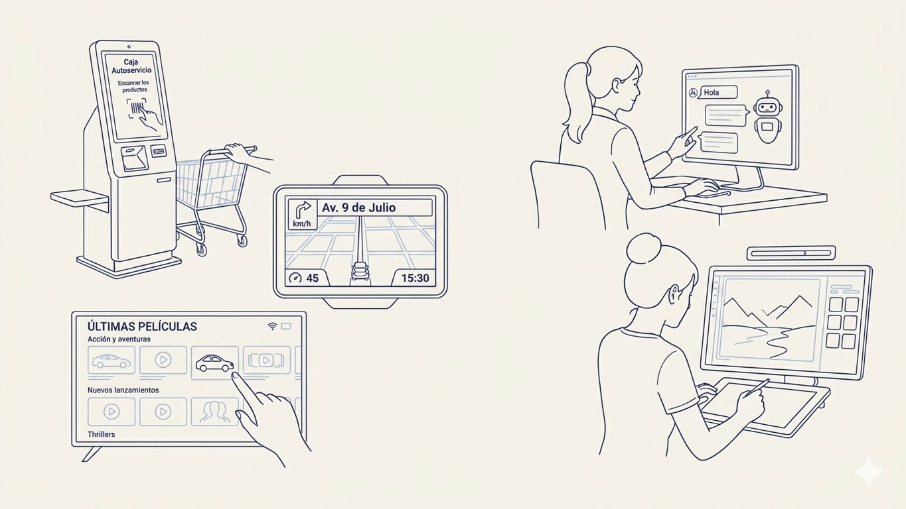
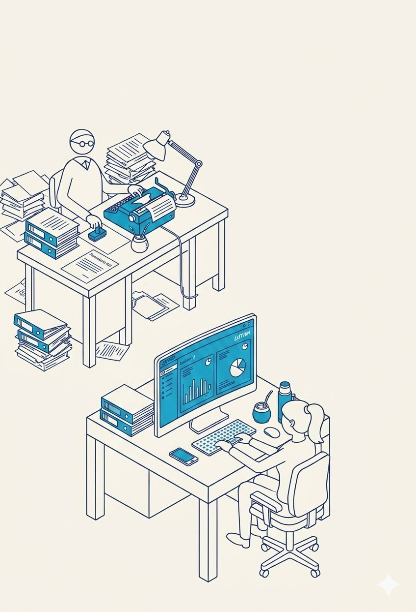
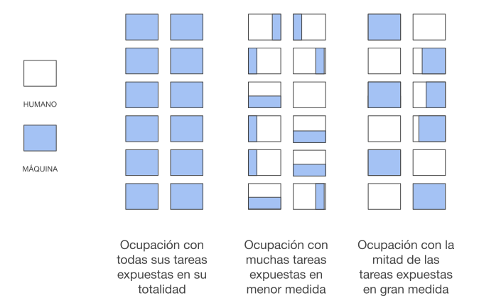

10 puntos para entender qué es la IA generativa, cómo afecta las ocupaciones y qué dice la evidencia empírica sobre su impacto en el trabajo.
La inteligencia artificial tiene décadas de historia. Bajo ese paraguas conviven muchas técnicas: machine learning, reconocimiento de imagen, sistemas expertos. Pero el debate actual gira en torno a un tipo específico: la IA generativa (IA Gen).
El punto de inflexión fue 2017, con la publicación de la arquitectura Transformer. Esa innovación permitió los grandes modelos de lenguaje (LLM): sistemas capaces de generar texto, código e imágenes con una fluidez sin precedentes. En 2022, ChatGPT los llevó a la masividad. Pero eso no significa que la IA generativa sea el único tipo de IA.
¿Por qué importa la distinción?
Este estudio se centra específicamente en el impacto de la IA generativa y su impacto sobre los trabajos de CABA. Pero la IA generativa no es la única IA que afecta a los trabajos: un algoritmo de recomendación de películas, el de un cajero automático que opera con reglas simples o el del GPS puede no ser IA generativa, pero tiene un gran impacto igual.

Y tampoco es la única tecnología que afecta a los trabajos (que vienen transformándose por tecnologías de la información y comunicación hace décadas, desde el teléfono, las planillas de Excel o los cajeros automáticos).
Una misma ocupación puede verse afectada de manera muy distinta por distintos tipos de tecnología. Este estudio mira de cerca el impacto de la IA generativa; es decir, una mirada parcial, no total, sobre el efecto de la IA sobre el trabajo.
Para entender el impacto de la IA en el trabajo hay que abandonar la idea del trabajo como una unidad indivisible. Un médico, un contador, una recepcionista: cada uno realiza docenas de tareas distintas que pueden ser analíticas, manuales, interpersonales, rutinarias o creativas.
La tecnología no afecta a la ocupación como bloque, sino de manera diferencial a cada tipo de tarea. La IA generativa afecta particularmente las tareas cognitivas y analíticas: redacción, análisis de datos, programación, generación de contenido.
La exposición no es una foto fija. A medida que los modelos mejoran, más tareas pasan a estar dentro de su alcance. Como muestra el gráfico, esa mejora viene acelerándose.
Fuente: Kwa, T., West, B., Becker, J. et al. (2025). Measuring AI Ability to Complete Long Tasks. METR. metr.org
El benchmark METR-Horizon mide qué tan largas pueden ser las tareas que un modelo completa con confiabilidad. La progresión es exponencial: la duración de las tareas resueltas viene duplicándose aproximadamente cada siete meses. En 2019, GPT-2 manejaba tareas equivalentes a segundos de trabajo humano; los modelos frontera de 2026 resuelven con éxito tareas que a una persona le tomarían más de una hora. El salto se profundizó marcadamente desde 2023, con el lanzamiento de GPT-4.
Las ocupaciones tampoco son estáticas. Las tareas que las componen cambian permanentemente, con IA o sin ella.
Hace treinta años, una parte enorme del trabajo del contador era anotar manualmente cada ingreso, egreso y transacción en libros contables, calcular impuestos con tablas impresas, archivar comprobantes en papel y presentar declaraciones de forma presencial.
Ese núcleo de tareas fue desapareciendo por etapas: primero con Excel, después con los sistemas de gestión contable, después con la facturación electrónica y las declaraciones online de AFIP.
Lo que creció en su lugar fue la interpretación normativa, el asesoramiento impositivo, la planificación fiscal, la relación con el cliente. Tareas que requieren criterio, contexto y responsabilidad legal. Hoy hay más contadores matriculados que nunca, pero casi no existe demanda para "cargar datos". El piso de calificación subió y la ocupación se redefinió.

La IA generativa es la última de estas olas de transformación, no la primera.

Fuente: elaboración propia
Decimos que una ocupación está expuesta a la IA generativa cuando una parte significativa de sus tareas puede ser asistida, complementada o realizada por un modelo de IA. Como toda ocupación es un conjunto de tareas, no existe un único patrón de exposición: distintas ocupaciones combinan tareas con distintos niveles de exposición — algunas con todas las tareas muy expuestas, otras con muchas tareas levemente expuestas, otras con la mitad fuertemente expuesta y la otra mitad nada.
La exposición es una condición necesaria para que la IA transforme un trabajo, pero no es suficiente. Los efectos concretos sobre el empleo y los salarios dependen de muchos otros factores: qué tareas específicas están expuestas, si pueden separarse del resto del trabajo, y cómo responden empresas, trabajadores e instituciones ante esas transformaciones.
La literatura distingue dos tipos de impacto tecnológico:
A nivel ocupacional, los dos efectos no se excluyen entre sí. La correlación entre exposición a la automatización y exposición a la complementariedad es de 0,87 (Sigelman et al., 2026, sobre 759 ocupaciones). Actualmente, al trabajador al que la IA le automatiza algunas tareas es el mismo al que le amplía otras.
Fuente: Sigelman, M. et al. (2026). The New Skill Landscape: AI's Impact on the Demand for Workforce Skills. Burning Glass Institute.
La pregunta relevante, en la mayoría de los casos, no es "¿este trabajo va a desaparecer?" sino "¿cómo va a cambiar y a qué velocidad?"
Entre la exposición técnica y el impacto real existe una brecha: la adopción efectiva. Las barreras incluyen costos de implementación, resistencia organizacional, falta de capacitación, regulaciones vigentes y la brecha digital.
En Argentina, los datos de adopción muestran que esa brecha es todavía considerable:
Esto significa que, del efecto potencial que mide el índice de exposición, hoy solo una parte se está materializando. El impacto real no es solo una cuestión técnica. Está atravesado por fricciones como quién puede acceder a la tecnología, quién sabe usarla, y quién tiene incentivos para adoptarla. Mientras que la exposición marca el techo posible, la adopción determina cuánto de ese techo se alcanza.
Las decisiones organizacionales alrededor de cómo se adopta la IA tienen un impacto tan relevante sobre los mercados laborales como las capacidades de la tecnología en sí. Entender qué tareas puede realizar la IA, cómo afecta a cada ocupación y de qué maneras puede transformar un trabajo es necesario, pero no suficiente. Gran parte de los efectos inmediatos y a mediano plazo sobre el empleo dependen de las decisiones que toman las organizaciones.
La tecnología habilita posibilidades, pero son las organizaciones quienes eligen cuáles de esas posibilidades se convierten en realidad y de qué manera. Las ganancias de productividad generadas por la IA no determinan por sí solas el destino laboral de los trabajadores afectados; lo hace la decisión organizacional.
Un análisis de 51 implementaciones empresariales de alto impacto (Pereira, Graylin y Brynjolfsson, 2026) identifica tres estrategias diferenciadas: acelerar en lugar de recortar, reinvirtiendo las ganancias en crecimiento y expansión del producto; reasignar hacia trabajo de mayor valor, moviendo personas de tareas automatizadas a aquellas que requieren juicio humano; o despedir. La elección entre estas estrategias no está determinada por la tecnología sino por el contexto estratégico de cada firma: las empresas en etapa de crecimiento tienden a la primera opción, mientras que las orientadas a reducción de costos recurren más frecuentemente a la tercera.
Un sistema de procesamiento automático de documentos que lee, clasifica y registra facturas sin intervención humana.
La empresa eligió reemplazar los puestos dedicados a esa tarea en lugar de reasignarlos.
Un agente conversacional capaz de entender reclamos de clientes, acceder al historial de pedidos y resolver disputas de manera autónoma.
El sistema reemplazó el primer nivel de atención al cliente casi por completo.
Modelos de generación y traducción de código capaces de leer código legacy y reescribirlo en lenguajes modernos.
La empresa aceleró una migración tecnológica que de otro modo hubiera requerido un equipo grande durante meses.
Sistemas de transcripción y síntesis automática de consultas médicas que generan notas clínicas estructuradas en tiempo real.
Las instituciones eligieron mantener a los médicos en sus roles y devolverles el tiempo antes dedicado a documentación.
Un sistema de triage automático que analiza miles de alertas de seguridad por día y prioriza las que requieren atención humana.
En lugar de reducir el equipo, la empresa reasignó los analistas liberados a tareas de mayor complejidad.
Herramientas de asistencia en tareas de conocimiento: síntesis de información, redacción de documentos, análisis preliminar de datos.
Las firmas integraron las herramientas en el flujo de trabajo de los analistas junior sin reducir dotación.
El impacto real sobre el empleo depende de muchos factores más allá de la exposición técnica: la elasticidad de la demanda del producto, la estructura de mercado del sector, las decisiones organizacionales de las empresas, el marco regulatorio y las instituciones laborales.
La evidencia reciente muestra que en la mayoría de los casos de alta exposición conviven ambos efectos, automatización de algunas tareas y ampliación de otras. En muy pocas ocupaciones la IA puede realizar la mayor parte de las tareas con éxito: programadores, analistas financieros, oficinistas, operadores de datos. En estos casos, como vimos en la sección anterior, las decisiones organizacionales sobre qué hacer a partir de la adopción de IA son múltiples y no están pre-determinadas por la tecnología.
La única señal sustantiva de impacto en el empleo hasta ahora apunta a los puestos de entrada.
La evidencia más robusta muestra que las empresas que adoptan IA crecen en empleo total, pero al mismo tiempo reducen sistemáticamente la proporción de empleados de baja antigüedad. En EE.UU., Reino Unido, Alemania, India, Japón y Brasil, la fracción de trabajadores junior cae después de la adopción, en todos los casos y de manera sostenida.
Las empresas que adoptan IA no destruyen empleo en términos netos — pero caen las contrataciones de jóvenes.Nivel de empleo en empresas adoptantes vs no adoptantes antes y después de la adopción
Diferencia en diferencias con matching · log empleo
Períodos relativos a la adopción de IA
Porcentaje de empleados de baja antigüedad antes y después de la adopción
Diferencia en diferencias con matching · fracción baja antigüedad
Períodos relativos a la adopción de IA
Fuente: Klein Teeselink, B. & Carey, K. (2026). AI, Automation, and Expertise. King's College London / AI Objectives Institute. Valores aproximados digitalizados a partir de las figuras del paper.
Cuando se habla de IA y trabajo, la conversación suele ir rápido hacia un escenario extremo: el desempleo estructural a escala global. Esa imagen es, por ahora, poco respaldada por la evidencia.
Lo que la historia del cambio tecnológico muestra, y lo que la evidencia reciente sobre IA empieza a confirmar, es un panorama más complejo. No el fin del trabajo, sino su transformación profunda, paulatina y potencialmente desigual. La pregunta relevante no es si va a haber trabajo, sino qué tipo de trabajo, para quiénes y en qué condiciones.
Las tecnologías de la información y la comunicación de las últimas décadas no destruyeron el empleo en términos netos, pero sí lo reorganizaron profundamente. El patrón fue de mayor polarización: cayó el empleo en las ocupaciones de calificación media —las más rutinarias y codificables— mientras crecieron los extremos. Más trabajo de alta calificación, más trabajo de baja calificación, menos trabajo en el medio.
Por eso, para saber cuál será el efecto global sobre el mercado laboral, más allá de saber cuántas tareas se automatizan, hay que mirar cuáles.
El nivel de expertise importa
El requisito de calificación sube. Los salarios suben, el empleo baja.
La computadora automatizó el registro mecánico de transacciones. Quedó: reconciliación, detección de anomalías, juicio profesional.
El requisito de calificación baja. El empleo sube, los salarios se estancan.
El GPS automatizó el conocimiento experto de calles y rutas. Ya no hace falta "conocer la ciudad".
Fuente: Autor, D. & Thompson, A. (2025). Expertise. MIT/NBER.
La tecnología en sí misma no dice nada sobre cómo se van a abordar las consecuencias de su adopción. Las capacidades de la tecnología evolucionan, las tareas de los trabajadores se reconfiguran, pero la distribución de costos y beneficios de la innovación no está determinada por la tecnología.
En ningún lado está escrito que la IA generativa deba redundar solo en mayor desigualdad, desplazamiento y falta de oportunidades. Este glosario busca mostrar exactamente eso: que los efectos son múltiples. De automatización, sí, pero también de ampliación de capacidades y de complementariedad. Qué efecto predomina depende, en parte, de la tecnología. Pero depende, sobre todo, de las decisiones que tomemos como sociedad.
Si la transición tiene lugar en el marco del diálogo social con empleadores y trabajadores participando sobre el sentido del cambio y con gobiernos generando las condiciones institucionales para esa conversación, entonces es posible orientar la transformación tecnológica hacia mayor productividad, mejores oportunidades y más capacidades para todos.
Pero eso solo puede suceder si todos los actores participan: empleadores, sindicatos y gobiernos, dialogando de manera tripartita sobre el futuro del trabajo.
El glosario es el punto de partida. Los datos sobre la estructura ocupacional de CABA y el índice de exposición te esperan.